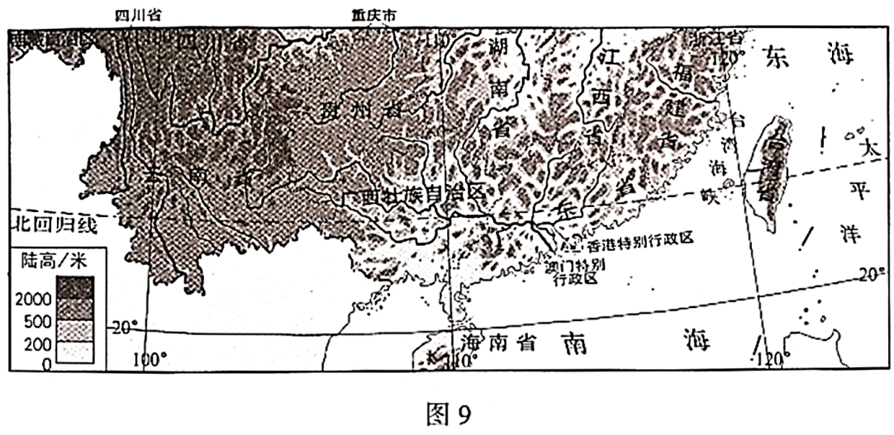
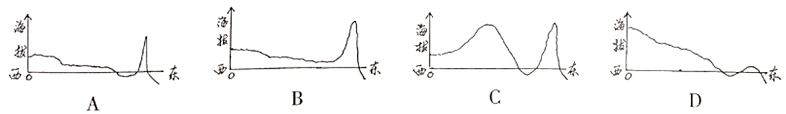

2020年北京市中考地理试题 · 选择题 第21、22、23、24、25题
沈括在《梦溪笔谈》中有以下记载：“诸越（泛指两广地区）则桃李冬实，朔漠（泛指西北地区）则桃李夏荣，此地气之不同也。一亩之稼，则粪溉者先芽；一丘之禾，则后种者晚实，此人力之不同也。岂可一切拘于定月哉？”据此，完成第20、21题。
21．由此可见，我国古人已经认识到
A．一切不拘农时，获得更大效益
B．通过改良品种，实施多种经营
C．提高农业技术，改变自然环境
D．顺应自然条件，兼顾人力作用
北回归线标志塔是标志地理学上北回归线经过地的建筑物。图9为我国局部区域图。读图，完成第22~25题。

22．某中学计划在校园设立北回归线标志杆，该学校可能位于
A．闽B．桂C．港D．琼
23．同学们手绘了我国地势沿北回归线剖面示意图，其中最接近实际的一幅是

24．台湾省北回归线标志塔会出现“立杆不见影”现象，
A．此时太阳直射赤道B．此后影子出现在偏北方向
C．一年中会出现两次D．最适合在冬季观察
25．能够反映台湾与祖国大陆文化同根同源的节假日是
A．劳动节B．端午节
C．世界地球日D．世界环境日
图10中阴影区域为我国脱贫攻坚的重点工作区。随着扶贫工作的深入，该区域贫困人口大幅下降。读图，完成第26~28题。